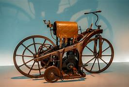

Daimler Reitwagen (1885): Gottlieb Daimler y Wilhelm Maybach construyeron el primer vehículo de dos ruedas propulsado por un motor de combustión interna. Aunque a menudo se le llama "la primera motocicleta", se parecía más a una bicicleta con un motor en lugar de pedales y tenía una rueda delantera grande y una rueda trasera pequeña.
La motocicleta tiene una historia que se remonta a fines del siglo XIX. Marcas icónicas como Harley-Davidson, Honda, Kawasaki, BMW y muchas otras han contribuido significativamente al desarrollo de la industria de las motocicletas.
